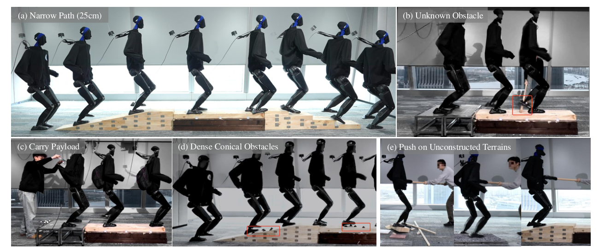
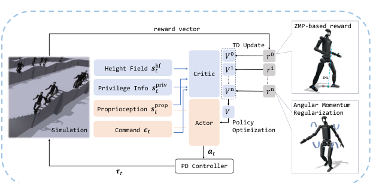
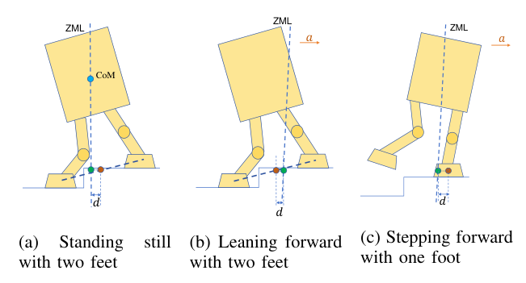
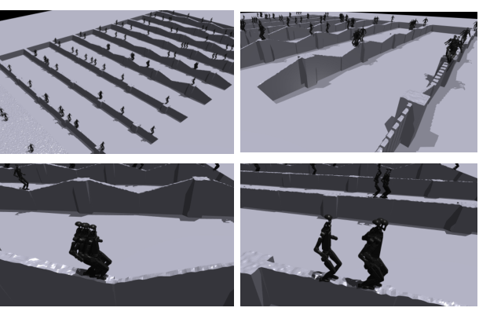
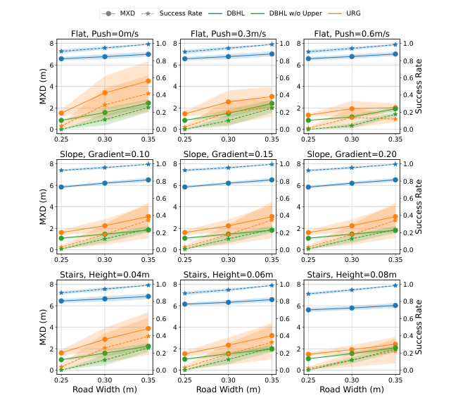
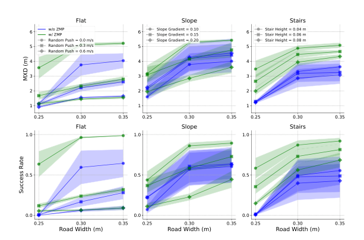
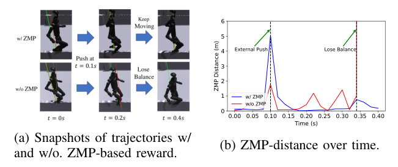
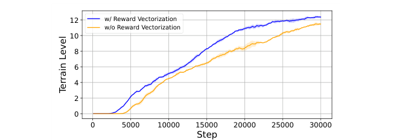
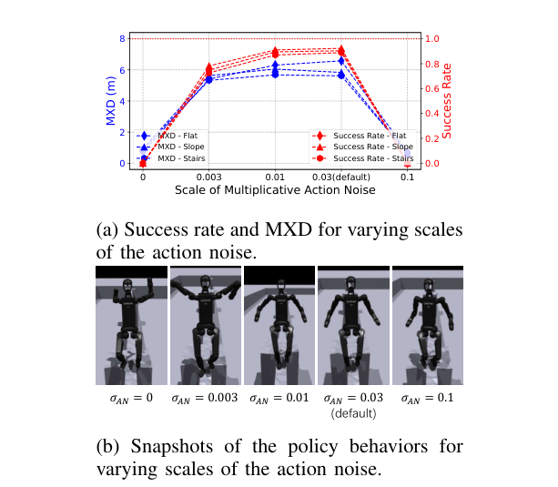
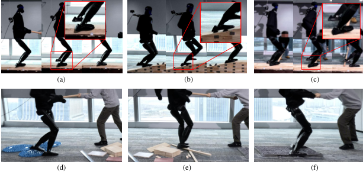

人形机器人在狭窄地形上的全身运动：动态平衡与强化学习
Weiji Xie、Chenjia Bai、Jiyuan Shi、Junkai Yang、Yunfei Ge、Weinan Zhang、Xuelong Li
arXiv:2502.17219v2，2025 年 2 月 28 日
摘要
人类具有精细的动态平衡机制，能够在多种地形和极端条件下保持稳定。尽管近年来取得了显著进展，现有的人形机器人运动算法仍难以通过极端环境，尤其是在缺少外部感知（如视觉或激光雷达）的情况下。这是因为现有方法往往依赖基于步态或感知条件的奖励，缺少应对不可观测障碍物和突发失衡的有效机制。为解决这一挑战，本文提出一种基于动态平衡与强化学习（reinforcement learning，RL）的全身运动算法，使人形机器人仅凭本体感知即可通过极端地形，尤其是狭窄通道和意外障碍。具体而言，作者在全身 actor-critic 框架中引入零力矩点（zero moment point，ZMP）驱动奖励和任务驱动奖励，以实现上下肢协调动作、提升行走鲁棒性。全尺寸 Unitree H1-2 人形机器人实验验证了该方法在极窄地形和外部扰动下维持平衡的能力，说明该方法能够增强机器人对复杂环境的适应性。
关键词： 人形机器人；动态平衡；强化学习；全身运动；零力矩点。
I. 引言
在人形机器人运动控制中，通过大规模交互和策略学习，强化学习近年来取得显著进展。已有方法主要包括基于相位的步态学习、运动技能控制和动作模仿。借助大规模并行仿真和策略优化，当前方法在常规地形上具有较好的适应能力。但在人类能够应对的极端条件下，机器人的动态平衡能力仍明显落后。人类遇到打滑或踏出边缘等情况时，能迅速调整落脚点和身体质心以恢复稳定；而现有强化学习控制器通常依赖周期步态或运动原语，难以在失稳关键时刻快速、灵活地调整步态。作者认为，鲁棒控制策略应充分利用接触力、支撑多边形和机器人质心等信息，因为它们刻画机器人与支撑面之间的细致关系，是动态平衡的关键。
传统双足运动研究区分行走周期中的两种足地接触状态：双支撑相中机器人由双脚支撑；单支撑相中只有一只脚接触地面，另一只脚从后方向前摆动。两种情况下，都必须判断机器人与地面能否在当前时刻维持接触。零力矩点（ZMP）用于刻画作用于机器人整体的力对其力矩的综合影响。具体来说，ZMP 是惯性力和重力合力矩在水平轴方向分量为零的点。已有研究表明，如果 ZMP 位于足地支撑多边形内，整个系统便处于动态平衡。本文据此将 ZMP 引入学习式人形机器人全身控制，在复杂地形和外部扰动下提高动态稳定性。
本文提出用于极端场景全身运动的强化学习框架 DBHL（Dynamic Balanced Humanoid Locomotion，动态平衡人形运动）。为增强策略通过复杂地形的能力，尤其是狭窄路径和突发障碍，作者把 ZMP 概念扩展到非平面表面，由此得到一条 ZMP 轨迹，即零力矩线（ZML）。设计的奖励促使 ZMP 坐标靠近人形机器人的支撑多边形中心。该奖励由仿真中的特权信息计算，而策略通过非对称 actor-critic 框架仅使用本体感知学习，因此部署时无需依靠外部感知。全身控制策略利用上身摆动辅助动态平衡；同时引入角动量正则化和乘性动作噪声，以约束不期望的躯干旋转和动作范围。最后，作者采用奖励向量化，把基于 ZMP 的奖励与命令跟踪、正则化奖励结合起来，使每项奖励对应一个独立价值函数，避免累积奖励中较小分量的价值估计不准确。
实验涵盖未知扰动、不同宽度和高度的台阶，以及不同宽度和坡度的狭窄斜坡。结果显示，DBHL 比其他主流方法具有更好的稳定性。作者通过对比分析 ZMP 奖励对动态平衡的作用，并对其他设计进行了消融研究。全尺寸 Unitree H1-2 实机实验显示，机器人能够通过狭窄地形、应对推搡和绊腿等扰动，并在多种极端场景中保持稳定和适应性（图 1）。
本文贡献概括如下：
- 将 ZMP 作为新型奖励函数集成到基于强化学习的人形机器人控制框架中，使机器人能在复杂地形实现动态平衡。
- 构建全身控制框架，并引入奖励向量化、角动量正则化和乘性动作噪声等技术。
- 在仿真和全尺寸人形机器人实机上开展广泛实验评估。

图 1. 无视觉或激光雷达传感器时全尺寸人形机器人的运动能力。(a) 25 cm 窄道：机器人通过包含坡道和台阶的窄路径，展示精确落脚和动态平衡。(b) 未知障碍：机器人迅速适应挥动木棍造成的绊腿干扰并保持稳定。(c) 搬运负载：机器人负载行走时仍保持稳定。(d) 密集圆锥障碍：机器人灵活协调地跨越一系列紧密排列的圆锥。(e) 在未构造地形上遭受推搡：机器人在不平地面行走时抵抗外力扰动。各场景体现 DBHL 应对复杂条件的多面性和有效性。
II. 相关工作
A. 人形机器人运动
人形机器人运动研究可追溯至 20 世纪 70 年代。运动控制器的基本设计通常将系统分为规划和跟踪模块：规划模块生成期望轨迹，跟踪模块确保机器人准确跟随轨迹。全身控制（whole-body control，WBC）和模型预测控制（model predictive control，MPC）等方法已取得显著进展，但通常需要精确的动力学模型，这对复杂机器人结构颇具挑战。近年，借助高效并行仿真，学习式算法成为腿式运动控制的有力替代方案，显著降低了机器人与环境交互的成本。在仿真中充分训练的策略可以迁移到真实机器人。强化学习已在四足机器人复杂地形行走、步态控制乃至跑酷等任务中表现出色。
对于基于强化学习的人形机器人运动，有限的支撑区域和较高的质心使问题更困难；经典控制算法也会受到复杂动力系统建模不精确的限制。近期工作探索了基于相位的步态学习、运动技能控制和动作模仿，但在狭窄路径等复杂地形、突发扰动等极端条件下，动态平衡仍不及人类。本文通过在强化学习框架中度量 ZMP 与人形机器人支撑多边形之间的关系来应对这一问题。作者指出，同时期的一项工作使用落脚点奖励通过狭窄区域，但其真实部署依赖基于激光雷达的高程图；DBHL 则仅使用本体感知，不需要视觉或激光雷达。
B. 零力矩点
几十年来，ZMP 一直是经典人形机器人运动控制的重要工具，为双足机器人的动态稳定性提供分析框架。形式上，ZMP 是地面上的一点，使惯性力与重力的合力矩在水平轴方向没有分量。此后，ZMP 被用于步态合成，并与先进传感器结合以实现实时平衡调整；相关思想也促进了新型材料和足部设计的发展。本文将 ZMP 扩展为一种奖励函数，通过衡量 ZML 与支撑多边形的关系，使人形机器人无需依赖外部感知即可在复杂地形上维持动态平衡。
III. 方法
本文训练端到端强化学习策略，使人形机器人仅凭本体感知即可通过极端地形。问题被表述为目标条件强化学习任务：策略 \(\pi\) 跟踪目标速度指令。动作 \(a_t\) 表示关节目标位置，并输入 PD 控制器驱动机器人各自由度。智能体观测 \(o_t\) 包括速度指令 \(c_t\) 和本体感知历史 \(s_t^{\mathrm{prop}}\)。作者使用近端策略优化（proximal policy optimization，PPO）及非对称 actor-critic 网络，最大化策略的折扣累计奖励。整体训练流程见图 2。

图 2. 提出方法的整体训练流程。仿真提供特权信息和地形高度场用于 critic 与奖励计算；actor 根据速度指令和本体感知产生动作，经 PD 控制器作用于机器人。奖励向量分别对应多个价值函数，并包含 ZMP 奖励与角动量正则化。
A. 基于 ZMP 的动态平衡
为实现动态平衡，作者设计基于 ZMP 的奖励并将其集成到强化学习框架。该奖励根据 ZMP 线（zero moment line，ZML）与机器人双脚构成的支撑多边形中心之间的距离计算（图 3）。
假设地面反作用力是作用于机器人系统的唯一外力，则该力相对于世界坐标系原点的力矩为：
\[\boldsymbol{\tau}=\mathbf{p}_{\mathrm{zmp}}\times\mathbf{f}+\boldsymbol{\tau}_p.\tag{1}\]
其中，\(\mathbf{p}_{\mathrm{zmp}}\) 为 ZMP 位置，\(\boldsymbol{\tau}_p\) 为关于 ZMP 的力矩，\(\mathbf{f}\) 为地面反作用力。根据牛顿—欧拉方程，有：
\[\begin{cases}\dot{\mathbf{P}}=M\mathbf{g}+\mathbf{f},\\\dot{\mathbf{L}}=\mathbf{p}_{\mathrm{CoM}}\times M\mathbf{g}+\boldsymbol{\tau}.\end{cases}\tag{2}\]
这里 \(\mathbf{P}\)、\(\mathbf{L}\)、\(M\) 和 \(\mathbf{p}_{\mathrm{CoM}}\) 分别表示线动量、关于原点的角动量、系统总质量和质心位置，\(\mathbf{g}=[0,0,-g]^\top\)。根据 ZMP 定义：
\[\tau_{p,x}=\tau_{p,y}=0.\tag{3}\]
联立求解可得：
\[p_{\mathrm{zmp},x}=\frac{Mg p_{\mathrm{CoM},x}+p_{\mathrm{zmp},z}\dot{P}_x-\dot{L}_y}{Mg+\dot{P}_z},\tag{4}\]
\[p_{\mathrm{zmp},y}=\frac{Mg p_{\mathrm{CoM},y}+p_{\mathrm{zmp},z}\dot{P}_y+\dot{L}_x}{Mg+\dot{P}_z}.\tag{5}\]
根据式（4）和式（5），不同高度 \(p_{\mathrm{zmp},z}\) 对应不同的 ZMP 位置，其轨迹构成零力矩线（ZML）。稳定行走条件是 ZML 与支撑多边形相交。在平面上，可对多个接触点取凸包得到支撑多边形；在斜坡或不平地形等不规则接触面上，则需将接触点投影到虚拟平面，计算较复杂。DBHL 通过奖励设计绕过显式的支撑多边形计算，将动态平衡转化为一种度量设计：鼓励 ZML 靠近支撑多边形中心。
支撑多边形的几何中心 \(\mathbf{p}_{\mathrm{csp}}\) 近似为有支撑作用的双脚中心：
\[\mathbf{p}_{\mathrm{csp}}=\frac{\mathbf{p}_{\mathrm{left-foot}}(c_{\mathrm{left-foot}}+\epsilon)+\mathbf{p}_{\mathrm{right-foot}}(c_{\mathrm{right-foot}}+\epsilon)}{c_{\mathrm{left-foot}}+c_{\mathrm{right-foot}}+2\epsilon}.\tag{6}\]
其中 \(\mathbf{p}_{\mathrm{left-foot}}\)、\(\mathbf{p}_{\mathrm{right-foot}}\) 分别是左右脚中心；\(c_{\mathrm{left-foot}}=\mathbb{1}[\|\mathbf{f}_{\mathrm{left-foot}}\|_2>0]\) 和 \(c_{\mathrm{right-foot}}=\mathbb{1}[\|\mathbf{f}_{\mathrm{right-foot}}\|_2>0]\) 是接触指示函数，用于判断相应脚是否接触地面。双脚支撑时，\(\mathbf{p}_{\mathrm{csp}}\) 近似为双脚中心；单脚支撑时则近似为支撑脚中心。
根据该近似，作者定义可计算的 ZMP 奖励 \(r_{\mathrm{zmp}}\)，其输入为 \(\mathbf{p}_{\mathrm{csp}}\) 与 ZML 之间的水平距离（ZMP 距离）：
\[r_{\mathrm{zmp}}=\exp\left(-\frac{\|\mathbf{p}_{\mathrm{csp}}-\operatorname{Proj}_{\mathrm{ZML}}(\mathbf{p}_{\mathrm{csp}})\|_2}{0.05}\right).\tag{7}\]
\(\operatorname{Proj}_{\mathrm{ZML}}(\mathbf{p}_{\mathrm{csp}})\) 表示将 \(\mathbf{p}_{\mathrm{csp}}\) 投影到水平面中的 ZML。直观而言，\(\mathbf{p}_{\mathrm{csp}}\) 越接近 ZML，动态稳定性越好，奖励也越高。

图 3. 不同运动状态下基于 ZMP 的奖励示意。棕色点是支撑多边形中心近似值 \(\mathbf{p}_{\mathrm{csp}}\)，绿色点是其在水平面上向 ZML 的投影。(a) 双脚静止站立；(b) 双脚支撑时身体前倾；(c) 单脚支撑、向前迈步。
B. 全身运动
为实现全身协调运动并增强动态稳定性，作者提出利用上身摆动辅助动态平衡的全身运动框架，并采用角动量正则化和乘性动作噪声两项技术。
1. 角动量正则化
角动量正则化用于减少运动中的非期望旋转，提高协调性和抗外部扰动能力。已有研究指出，摆动腿会产生较大的角动量，可能扰乱全身运动；恰当地利用上肢可抵消这部分角动量。作者根据机器人基座位置处总角动量 \(\mathbf{L}_{\mathrm{base}}\) 的 \(L_2\) 范数定义正则化奖励：
\[r_{\mathrm{AM}}=\exp\left(-\frac{\|\mathbf{L}_{\mathrm{base}}\|_2}{5}\right).\tag{8}\]
\[\mathbf{L}_{\mathrm{base}}=\sum_{i=1}^{n}\left[\mathbf{p}_{i}^{\mathrm{base}}\times(m_i\mathbf{v}_{i}^{\mathrm{base}})+\mathbf{I}_i\boldsymbol{\omega}_{i}^{\mathrm{base}}\right].\tag{9}\]
其中 \(m_i\) 为第 \(i\) 个连杆的质量，\(\mathbf{p}_i^{\mathrm{base}}\)、\(\mathbf{v}_i^{\mathrm{base}}\) 和 \(\boldsymbol{\omega}_i^{\mathrm{base}}\) 分别为该连杆相对于基座的位置、线速度和角速度，\(\mathbf{I}_i\) 为该连杆质心处的惯性张量。
2. 乘性动作噪声注入
乘性动作噪声用于限制上身关节的运动范围，从而提高策略鲁棒性。若不加约束，策略可能产生不稳定的大幅上肢动作。实现时，在输入 PD 控制器前对名义动作 \(a_t\) 施加乘性噪声：
\[a'_t=a_t(1+\sigma_{\mathrm{AN}}\epsilon_t),\qquad \epsilon_t\sim\mathcal{N}(0,I).\tag{10}\]
动作幅度越大，扰动也越大，因此策略会倾向于让上身关节采用较小动作，并在需要大幅运动时更加谨慎。
C. 策略学习细节
1. 任务与指令
训练中构造三类窄地形：平地、台阶和斜坡。训练地形混合采样，每类窄地形各占 30%，另有 10% 为平地。训练采用地形课程机制，设置 20 个难度等级：路径宽度从 1.0 m 逐渐降至 0.2 m，坡度从 0 增至 0.3，台阶高度从 0 增至 0.12 m。每个回合中，线速度指令均匀采样于 \(\hat v_{x,t}\in[-0.5,1.0]\) m/s、\(\hat v_{y,t}\in[-0.2,0.2]\) m/s。偏航角速度指令为 \(\hat\omega_{\mathrm{yaw},t}=\operatorname{clip}(0.5\Delta\theta_{\mathrm{yaw}},-1,1)\) rad/s，其中 \(\Delta\theta_{\mathrm{yaw}}\) 是机器人朝向与世界 \(X\) 轴正方向之间的水平夹角。
2. 非对称 actor-critic 框架
actor 观测 \(o_t\in\mathbb{R}^{279}\) 由速度指令 \(c_t=[\hat v_{x,t},\hat v_{y,t},\hat\omega_{\mathrm{yaw},t}]\) 和本体感知 \(s_t^{\mathrm{prop}}=[q_{t-3:t},\dot q_{t-3:t},\omega_{t-3:t},g_{t-3:t},a_{t-4:t-1}]\) 构成。它包含 4 步历史：关节位置 \(q_t\in\mathbb{R}^{21}\)、关节速度 \(\dot q_t\in\mathbb{R}^{21}\)、基座角速度 \(\omega_t\in\mathbb{R}^3\)、基座投影重力 \(g_t\in\mathbb{R}^3\) 及此前动作 \(a_{t-1}\in\mathbb{R}^{21}\)。critic 观测还包括 actor 观测、特权信息 \(s_t^{\mathrm{priv}}\in\mathbb{R}^{70}\) 和周围高度场 \(s_t^{\mathrm{hf}}\in\mathbb{R}^{187}\)。特权信息包含线速度、基座高度、足部接触指示、随机化的 PD 参数和连杆质量。高度场覆盖机器人周围 \(1.6\,\mathrm{m}\times1.0\,\mathrm{m}\) 区域，采样点间距为 0.1 m。该框架利用特权信息提升价值函数估计，同时限制 actor 只使用局部状态，以利于迁移到真实环境。
3. 奖励与价值函数向量化
为便于使用不同奖励函数学习价值函数，作者将奖励和值函数向量化。不同于先把所有奖励项累加成一个标量再学习单个价值函数，本文把奖励组成向量，并通过时序差分（temporal-difference，TD）学习分别估计对应价值函数。总价值函数为：
\[V_{\mathrm{total}}(s_t)=\sum_{i=1}^{\#\mathrm{Reward}}V^i(s_t).\tag{11}\]
价值函数的训练损失为：
\[L_{\mathrm{value}}=\sum_{i=1}^{\#\mathrm{Reward}}\mathbb{E}\left[\left(r_t^i+\gamma V^i(s_{t+1})-V^i(s_t)\right)^2\right].\tag{12}\]
DBHL 奖励如表 I 所示。任务类奖励包含线速度跟踪、角速度跟踪和低速惩罚；步态类包括 ZMP、足部腾空时间、足部接触、双脚间距、足部滑移、足部高度、基座高度和足部边缘距离；正则化类包括角动量、姿态、基座加速度、动作平滑、动作接近度、力矩、自由度速度、自由度位置限制和碰撞惩罚。
表 I. DBHL 的奖励函数类别。
| 类别 | 奖励项 |
|---|---|
| 任务 | 线速度跟踪、角速度跟踪、低速惩罚 |
| 步态 | ZMP、足部腾空时间、足部接触、双脚间距、足部滑移、足部高度、基座高度、足部边缘距离 |
| 正则化 | 角动量、姿态、基座加速度、动作平滑、动作接近度、力矩、自由度速度、自由度位置限制、碰撞 |
4. 对称性正则化
受相关研究启发，作者加入对称性损失以提高样本效率并促进更协调的步态。该损失利用机器人相对于 \(x-z\) 平面的运动对称性：
\[L_{\mathrm{symm}}=\mathbb{E}\left[\|V(G(s_t))-V(s_t)\|_2^2+\|\pi(G(o_t))-G(\pi(o_t))\|_2^2\right].\tag{13}\]
其中 \(G\) 表示关于 \(x-z\) 平面的反射算子。
5. 域随机化
为实现零样本仿真到现实迁移，作者随机化仿真环境和人形机器人的物理参数，设置如表 II。
表 II. 域随机化设置。 \(U\) 为均匀分布，\(\mathrm{Exp}\) 为指数分布。
| 参数 | 取值 |
|---|---|
| 外部推力 | \(\Delta T\sim\mathrm{Exp}(6)\) s；\(\Delta v_{xy}\sim U(-0.6,0.6)\) m/s；\(\Delta\omega\sim U(-0.8,0.8)\) rad/s |
| 动作延迟 | \(U(4,20)\) ms |
| P 增益 | 默认值的 \(U(0.8,1.2)\) 倍 |
| D 增益 | 默认值的 \(U(0.8,1.2)\) 倍 |
| 摩擦系数 | \(U(0.1,2)\) |
| 连杆质量 | 默认值的 \(U(0.8,1.2)\) 倍 |
| 负载质量 | \(U(-1,3)\) kg |
| 基座质心偏移 | \(U(-0.1,0.1)\) m |
| 力矩随机扰动 | \(\Delta\tau\sim U(-0.1,0.1)\times\tau_{\mathrm{rfi}}\times\) 力矩上限；每个回合 \(\tau_{\mathrm{rfi}}\sim U(0.5,1.5)\) |
| 动作噪声 | \(\sigma_{\mathrm{AN}}=0.03\)，见 III-B-2 |
IV. 实验
实验旨在回答四个问题：Q1，DBHL 能否在多种极端地形中优于其他方法？Q2，基于 ZMP 的奖励对动态平衡有何贡献？Q3，奖励向量化和动作噪声等设计如何影响训练表现？Q4，DBHL 能否迁移到真实硬件？
实验设置
实验平台为 Unitree H1-2 全尺寸人形机器人，具有 27 个自由度。策略控制 21 个自由度，排除双手腕部各 3 个自由度。强化学习策略在 Isaac Gym 中训练，并使用 MuJoCo 作为仿真到仿真验证平台（图 4）。评估覆盖窄平地、窄坡道和窄台阶，并改变路径宽度与难度；难度分别由平地推力最大线速度、坡度和台阶高度刻画。Isaac Gym 中每种设置采样 104 个回合，每回合 20 s，前向速度为 0.5 m/s；MuJoCo 中采样 100 个回合，每回合 25 s，前向速度为 0.3 m/s。由于 MuJoCo 物理保真度较高，较少回合也能获得可靠结果；同时策略从 Isaac Gym 迁移到 MuJoCo 往往会降低性能，因此使用更长时长和更保守的指令。报告成功率（移动距离至少 4 m 判为成功）和平均 X 方向位移（mean X-displacement，MXD）。

图 4. DBHL 训练使用的不同地形示例。
A. 窄地形结果比较
为回答 Q1，作者在 Isaac Gym 中与两种基线比较：DBHL w/o Upper 固定上身，只控制下身；Unitree RL Gym（URG）是 Unitree 官方强化学习框架，基本遵循参考文献 [1]，采用非对称 actor-critic 控制下身，并依靠基于相位的奖励学习周期步态。为公平比较，也把高度场纳入 URG 的观测空间。
表 III 和图 5 显示，DBHL 在成功率和 MXD 两方面均持续优于基线。例如，在高难度且路径宽度为 0.25 m 时，DBHL 在平地、斜坡和台阶上的成功率分别为 \(0.90\pm0.02\)、\(0.92\pm0.02\) 和 \(0.89\pm0.02\)；而固定上身的 DBHL w/o Upper 分别为 \(0.00\pm0.00\)、\(0.01\pm0.01\) 和 \(0.00\pm0.00\)。这突出体现了全身控制的关键作用：只控制下身时性能显著下降，说明狭窄地形行走需要机器人整体协调。相较于基于相位的控制方法，DBHL 在多种地形和难度下都更鲁棒，成功率和 MXD 更高，表明无相位控制和全身控制对复杂环境的重要性。
表 III. 高难度设置下不同地形的基线比较。 平地推力为 0.6 m/s，坡度为 0.2，台阶高度为 0.08 m；每组三列对应路径宽度 0.25、0.30、0.35 m。成功率与 MXD 为均值 ± 标准差。
| 指标 | 方法 | 平地 0.25 | 平地 0.30 | 平地 0.35 | 斜坡 0.25 | 斜坡 0.30 | 斜坡 0.35 | 台阶 0.25 | 台阶 0.30 | 台阶 0.35 |
|---|---|---|---|---|---|---|---|---|---|---|
| 成功率 | DBHL | 0.90±0.02 | 0.94±0.02 | 0.99±0.01 | 0.92±0.02 | 0.96±0.02 | 1.00±0.00 | 0.89±0.02 | 0.93±0.02 | 0.98±0.01 |
| 成功率 | DBHL w/o Upper | 0.00±0.00 | 0.04±0.03 | 0.18±0.03 | 0.01±0.01 | 0.13±0.05 | 0.24±0.04 | 0.00±0.00 | 0.12±0.04 | 0.25±0.04 |
| 成功率 | URG | 0.01±0.01 | 0.14±0.12 | 0.12±0.04 | 0.03±0.02 | 0.18±0.12 | 0.34±0.21 | 0.02±0.02 | 0.12±0.08 | 0.22±0.14 |
| MXD (m) | DBHL | 6.58±0.17 | 6.78±0.21 | 7.02±0.20 | 5.83±0.11 | 6.20±0.15 | 6.52±0.20 | 5.62±0.20 | 5.79±0.20 | 6.03±0.23 |
| MXD (m) | DBHL w/o Upper | 0.85±0.04 | 1.16±0.17 | 1.92±0.25 | 1.07±0.08 | 1.47±0.15 | 1.81±0.17 | 1.07±0.06 | 1.55±0.16 | 2.10±0.16 |
| MXD (m) | URG | 1.33±0.11 | 1.93±0.73 | 2.02±0.37 | 1.61±0.24 | 2.24±0.59 | 3.09±1.04 | 1.48±0.15 | 1.91±0.43 | 2.42±0.67 |

图 5. 多种地形和难度下的基线比较。结果显示，全身控制对 DBHL 至关重要；在困难条件下，动态平衡机制比基于相位的步态更有效。每种设置使用 3 个随机种子评估。曲线周围阴影表示 ±1σ。
B. 基于 ZMP 奖励的分析
为回答 Q2，作者比较训练时采用和不采用 ZMP 奖励的策略，考察动态平衡和任务表现。
1. 定量比较
图 6 在 MuJoCo 中比较两种策略的成功率与 MXD。选择 MuJoCo 是为了利用其高保真仿真敏感地检测策略差异。结果显示，加入 ZMP 奖励后，机器人在多数设置下能更有效地通过狭窄且具有挑战性的地形，成功率和 MXD 均明显提高。一个例外是未使用 ZMP 的策略在坡度 0.2 时反而优于坡度 0.1 和 0.15；作者推测该策略可能对这一条件过拟合。

图 6. 基于 ZMP 的奖励比较。加入 ZMP 奖励提升了机器人动态稳定性，使其在窄地形上获得更高成功率和 MXD。每种设置使用 3 个随机种子；曲线周围阴影表示 ±0.5σ。
2. 定性比较
图 7 展示了两条代表性轨迹。\(t=0.1\) s 时，机器人受到一次外推扰动（\(\Delta v_y=0.6\) m/s）。没有 ZMP 奖励的策略失去平衡；相应的 ZMP 距离 \(\|\mathbf{p}_{\mathrm{csp}}-\operatorname{Proj}_{\mathrm{ZML}}(\mathbf{p}_{\mathrm{csp}})\|_2\)（式（7））显著增大并最终发散。采用 ZMP 奖励的策略则在整个扰动过程中维持稳定，因为最大化 ZMP 奖励约束了该距离。

图 7. 外推扰动下两条轨迹的比较。无 ZMP 奖励时，机器人受推后失去平衡并跌倒，ZMP 距离发散；DBHL 使用 ZMP 奖励时保持动态平衡。快照中，黄色线表示 ZML，绿色线和红色线分别表示穿过支撑中心及其 ZML 投影点的竖线。
C. 消融研究
为回答 Q3，作者在 Isaac Gym 中研究奖励向量化和乘性动作噪声这两项设计选择。
1. 奖励向量化的作用
图 8 比较采用和不采用奖励向量化时的训练曲线。奖励向量化显著加快了学习和策略收敛。这是因为奖励和值向量化框架允许 DBHL 分别学习与每项奖励对应的价值项，从而提高整体学习效率。

图 8. 有无奖励向量化的训练曲线比较。地形等级为课程机制计算的平均难度，共有预先定义的 20 个等级。每种设置评估 3 个随机种子；曲线每 100 步采样，并用平滑系数 0.1 的指数移动平均平滑。
2. 乘性动作噪声的作用
图 9 比较不同动作噪声尺度。实验表明，恰当的噪声水平能有效限制上身关节的活动范围；噪声过低或过高都会导致任务不稳定。实验在路径宽度 25 cm 的高难度窄地形上进行。

图 9. 动作噪声消融。适当的动作噪声尺度能约束上身关节运动范围，并提升任务表现。高难度设置下，窄地形宽度为 25 cm。
D. 真实世界实验
作者将 DBHL 部署到 Unitree H1-2 上，评估其在窄地形和平坦地形上的性能。测试平台包含一条宽 25 cm 的窄木质轨道，由三段组成：坡度 0.2、长度 1.6 m 的斜坡；长度 1.6 m 的桥段；以及踏步宽 40 cm、台阶高度 8 cm 的楼梯。
1. 窄地形上的外部扰动
如图 1 和图 10(a–c) 所示，DBHL 能够通过窄轨道，并应对多种困难扰动，包括携带 5 kg 负载、通过密集圆锥障碍、抵抗人推以及被移动木棍绊扰。
2. 不平地面上的不规则障碍
前述实验聚焦于窄地形，作者另行训练了一个不规则平地策略，并在真实平地上布置多种不规则障碍进行评估（图 10(d–f)）。环境包括按摩板、木块、木板和石铺道路；机器人还需在通过复杂地形时应对外力。结果表明 DBHL 能克服这些复杂地形挑战。

图 10. 真实世界实验：(a) 受扰动的窄路径；(b) 带圆锥障碍的斜坡；(c) 移动木棍绊扰；(d) 按摩板；(e) 木块障碍；(f) 石铺路面。结果体现 DBHL 应对真实挑战的能力。
V. 结论
本文提出 DBHL，一种通过基于 ZMP 的奖励函数和全身控制框架，使人形机器人通过极端地形的强化学习框架。大量仿真和真实世界实验表明，DBHL 在狭窄和不平地形中表现出优越性能，具有较强的鲁棒性和适应性。该方法为需要极强运动能力和平衡能力的真实应用提供了新思路。
致谢
本研究得到国家自然科学基金资助（项目编号 62306242）。
参考文献
参考文献书目信息按原文保留。
[1] X. Gu, Y.-J. Wang, and J. Chen, “Humanoid-gym: Reinforcement learning for humanoid robot with zero-shot sim2real transfer,” arXiv preprint arXiv:2404.05695, 2024.
[2] X. Gu, Y.-J. Wang, X. Zhu, C. Shi, Y. Guo, Y. Liu, and J. Chen, “Advancing humanoid locomotion: Mastering challenging terrains with denoising world model learning,” in RSS, 2024.
[3] Y. Xue, W. Dong, M. Liu, W. Zhang, and J. Pang, “A unified and general humanoid whole-body controller for fine-grained locomotion,” arXiv preprint arXiv:2502.03206, 2025.
[4] Y. Guo, Z. Jiang, Y.-J. Wang, J. Gao, and J. Chen, “Decentralized motor skill learning for complex robotic systems,” IEEE RA-L, 2023.
[5] Q. Zhang, C. Weng, G. Li, F. He, and Y. Cai, “Hilo: Learning wholebody human-like locomotion with motion tracking controller,” arXiv preprint arXiv:2502.03122, 2025.
[6] T. Peng, L. Bao, J. Humphreys, A. M. Delfaki, D. Kanoulas, and C. Zhou, “Learning bipedal walking on a quadruped robot via adversarial motion priors,” in Annual Conference Towards Autonomous Robotic Systems. Springer, 2024, pp. 118–129.
[7] Z. Zhuang and H. Zhao, “Embrace collisions: Humanoid shadowing for deployable contact-agnostics motions,” arXiv preprint arXiv:2502.01465, 2025.
[8] N. Rudin, D. Hoeller, P. Reist, and M. Hutter, “Learning to walk in minutes using massively parallel deep reinforcement learning,” in Conference on Robot Learning, 2022, pp. 91–100.
[9] L. Engstrom, A. Ilyas, S. Santurkar, D. Tsipras, F. Janoos, L. Rudolph, and A. Madry, “Implementation matters in deep rl: A case study on ppo and trpo,” in ICLR, 2019.
[10] G. B. Margolis and P. Agrawal, “Walk these ways: Tuning robot control for generalization with multiplicity of behavior,” in CoRL, 2023, pp. 22–31.
[11] M. Vukobratovic and J. Stepanenko, “On the stability of anthropomorphic systems,” Mathematical Biosciences, vol. 15, pp. 1–37, 1972.
[12] M. Vukobratovi´c, B. Borovac, D. Surla, and D. Stoki´c, Biped Locomotion: Dynamics, Stability, Control and Application. Berlin: SpringerVerlag, 1990.
[13] I. Yamaguchi, A. Takanishi, and I. Kato, “Development of a biped walking robot compensation for three — axis moment by trunk motion,” in Proc. IEEE/RSJ Int. Conf. Intelligent Robot and Systems, Yokohama, Japan, 1993.
[14] I. Kato, S. Ohteru, H. Kobayashi, K. Shirai, and A. Uchiyama, “Information-power machine with senses and limbs (wabot 1),” in First CISM-IFToMM Symposium on Theory and Practice of Robots and Manipulators, vol. 1. Vienna: Springer-Verlag, 1974, pp. 11–24.
[15] R. Grandia, F. Jenelten, S. Yang, F. Farshidian, and M. Hutter, “Perceptive locomotion through nonlinear model-predictive control,” IEEE Transactions on Robotics, vol. 39, no. 5, pp. 3402–3421, 2023.
[16] A. Meduri, P. Shah, J. Viereck, M. Khadiv, I. Havoutis, and L. Righetti, “Biconmp: A nonlinear model predictive control framework for whole body motion planning,” IEEE Transactions on Robotics, vol. 39, no. 2, pp. 905–922, 2023.
[17] J. Li and Q. Nguyen, “Multi-contact mpc for dynamic locomanipulation on humanoid robots,” in American Control Conference (ACC). IEEE, 2023, pp. 1215–1220.
[18] L. Sentis and O. Khatib, “A whole-body control framework for humanoids operating in human environments,” in ICRA. Orlando, FL, USA: IEEE, 2006, pp. 2641–2648.
[19] J.-P. Sleiman, F. Farshidian, M. V. Minniti, and M. Hutter, “A unified mpc framework for whole-body dynamic locomotion and manipulation,” IEEE RA-L, vol. 6, no. 3, pp. 4688–4695, 2021.
[20] J. Koenemann, A. D. Prete, Y. Tassa, E. Todorov, O. Stasse, M. Bennewitz, and N. Mansard, “Whole-body model-predictive control applied to the HRP-2 humanoid,” in IROS. Hamburg, Germany: IEEE, 2015, pp. 3346–3351.
[21] G. Schultz and K. Mombaur, “Modeling and optimal control of humanlike running,” IEEE/ASME Transactions on Mechatronics, vol. 15, no. 5, pp. 783–792, 2009.
[22] S. Ha, J. Lee, M. van de Panne, Z. Xie, W. Yu, and M. Khadiv, “Learning-based legged locomotion: State of the art and future perspectives,” The International Journal of Robotics Research, 2024.
[23] H. He, P. Wu, C. Bai, H. Lai, L. Wang, L. Pan, X. Hu, and W. Zhang, “Bridging the sim-to-real gap from the information bottleneck perspective,” in CoRL, 2024.
[24] J. Levy, T. Westenbroek, and D. Fridovich-Keil, “Learning to walk from three minutes of real-world data with semi-structured dynamics models,” in CoRL, 2024.
[25] J. Shi, C. Bai, H. He, L. Han, D. Wang, B. Zhao, M. Zhao, X. Li, and X. Li, “Robust quadrupedal locomotion via risk-averse policy learning,” in ICRA. IEEE, 2024, pp. 11 459–11 466.
[26] L. Han, Q. Zhu, Sheng, et al., “Lifelike agility and play in quadrupedal robots using reinforcement learning and generative pre-trained models,” Nature Machine Intelligence, vol. 6, no. 7, pp. 787–798, 2024.
[27] X. Huang, Y. Chi, R. Wang, Z. Li, X. B. Peng, S. Shao, B. Nikolic, and K. Sreenath, “Diffuseloco: Real-time legged locomotion control with diffusion from offline datasets,” in CoRL, 2024.
[28] Z. Zhuang, Z. Fu, J. Wang, C. G. Atkeson, S. Schwertfeger, C. Finn, and H. Zhao, “Robot parkour learning,” in CoRL, 2023.
[29] X. Cheng, K. Shi, A. Agarwal, and D. Pathak, “Extreme parkour with legged robots,” in ICRA. IEEE, 2024, pp. 11 443–11 450.
[30] H. Wang, Z. Wang, J. Ren, Q. Ben, J. Pang, T. Huang, and W. Zhang, “Beamdojo: Learning agile humanoid locomotion on sparse footholds,” 2024.
[31] M. Vukobratovi´c and B. Borova´c, “Zero-moment point — thirty five years of its life,” International Journal of Humanoid Robotics, vol. 1, no. 1, pp. 157–173, 2004.
[32] S. Kajita, H. Hirukawa, K. Harada, and K. Yokoi, Introduction to Humanoid Robotics, 1st ed. Springer Publishing Company, 2016.
[33] J. Schulman, F. Wolski, P. Dhariwal, A. Radford, and O. Klimov, “Proximal policy optimization algorithms,” arXiv preprint arXiv:1707.06347, 2017.
[34] L. Pinto, M. Andrychowicz, P. Welinder, W. Zaremba, and P. Abbeel, “Asymmetric actor critic for image-based robot learning,” in RSS. MIT Press Journals, 2018.
[35] T. Brecelj and T. Petriˇc, “Zero moment line—universal stability parameter for multi-contact systems in three dimensions,” Sensors, vol. 22, no. 15, p. 5656, 2022.
[36] S. Caron, Q.-C. Pham, and Y. Nakamura, “Zmp support areas for multicontact mobility under frictional constraints,” IEEE Transactions on Robotics, vol. 33, no. 1, pp. 67–80, 2017.
[37] M. Popovic, A. Hofmann, and H. Herr, “Angular momentum regulation during human walking: biomechanics and control,” in IEEE International Conference on Robotics and Automation, 2004. Proceedings. ICRA ’04. 2004, vol. 3, 2004, pp. 2405–2411 Vol.3.
[38] X. Zhang, X. Wang, L. Zhang, G. Guo, X. Shen, and W. Zhang, “Achieving stable high-speed locomotion for humanoid robots with deep reinforcement learning,” arXiv preprint arXiv:2409.16611, 2024.
[39] Z. Su, X. Huang, D. Ordonez-Apraez, et al., “Leveraging symmetry in rl-based legged locomotion control,” IROS, pp. 6899–6906, 2024.
[40] V. Makoviychuk, L. Wawrzyniak, Y. Guo, M. Lu, K. Storey, M. Macklin, D. Hoeller, N. Rudin, A. Allshire, A. Handa, et al., “Isaac gym: High performance gpu-based physics simulation for robot learning,” arXiv preprint arXiv:2108.10470, 2021.
[41] E. Todorov, T. Erez, and Y. Tassa, “Mujoco: A physics engine for model-based control,” in 2012 IEEE/RSJ international conference on intelligent robots and systems. IEEE, 2012, pp. 5026–5033.